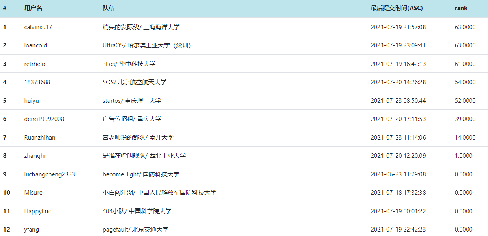

项目又名“オルトラオレジ”
比赛官网: https://os.educg.net/
UltraOS项目地址 :https://gitlab.eduxiji.net/ultrateam/ultraos
由于老师说我们UltraOS名字太大了，我们也比较菜，就仿照UltraMan（奥特曼） 日文将UltraOS起了个日文名“オルトラオレジ”
UltraOS的主要特性：
大赛指定的开发硬件为kendryte-K210开发板，为RISC-V64指令集双核处理器，带独立FPU与8M片上SRAM， 400M可调标称频率，支持乘法、除法和平方根运算和双精度FPU。
UltraOS参加比赛的内核赛道，该比赛每个学校内核赛道最多参加两个队伍，2021年内核总共参赛队伍为95个队伍。 截至7月20日，根据系统测试功能正确性自动评判得分，UltraOS在决赛第一阶段排名为1（与另一队伍并列）。
该比赛的评测方式为：根据系统调用能否满足测试程序的要求来判定。其评测流程如下：

目前多核和用户态支持说明暂时还未完成。
UltraOS由rust语言编写，运行于kendryte-K210开发板双核处理器上， 支持EXT2与FAT32文件系统,基于rCore-Turorial-v3 2021.3.24版本开发。目前正在开发以及完善更多系统调用，以支持静态编译的应用程序运行，使其能够达到与linux一样的应用程序支持。 目前多核运行不完备，仅仅能够支持6月版本，预计8月底我们将开发重心转换为双核支持。
现在支持的系统调用
UltraOS采用了模块化的设计思想，以保证开发速度以及最终成果的鲁棒性。同时，模块化的开发也考虑到了RISC-V架构本身对于特权级的规定。该指令集通常将程序运行的特权级分为三个部分：Machine Mode， Supervisor Mode and User Mode。对应的程序执行权限从高到低分布。根据这样的特性，我们将操作系统的构建也分为了三个部分：SBI，kernel and Standard Library，该三个部分分别对应三种特权级运行模式。下面我们简要介绍一下各个功能模块的主要设计思想和架构。
SBI，又称Supervisor Binary Interface，可以看作为Machine Mode提供给Supervisor Mode 程序的功能接口。该接口力图实现硬件抽象化，包括有CPU的指令集，以及计算机所拥有的其他硬件资源，并且抽象化之后保持行业内的规范，将硬件上表现不一致的部分，通过同等抽象，最终可以使得上层软件无需过多关心硬件的不一致性以及硬件的细节，使得上层软件能够拥有很好的逻辑性以及兼容性。在操作系统中，这一层又可以称作HAL(Hardware Abstraction Layer)。RustSBI在该层，主要实现了stdio, hsm(hart state management),ipi(inter-processor interrupt support), reset, timer五个部分。
Kernel，称作操作系统内核，是UltraOS的设计核心部分，主要包括有进程管理、内存管理以及文件系统三个部分。进程管理主要实现对于用户进程的控制，包括进程间的切换，进程状态的控制，进程对内核服务请求的应答，硬件中断的设置与处理等。而内存管理主要实现用户程序的内存隔离，包括用户动态堆分配、页表管理
、页帧分配以及用户程序的内存数据读取与搭建等。文件系统则主要面向硬盘，实现了EXT2-like和FAT32文件系统，主要功能为硬盘的增删改查以及硬盘的初始化和文件系统检测，硬盘驱动及抽象化以及文件系统对内核的抽象，文件系统的访问、修改、更新等。
内核不仅需要实现其中断服务机制，还需要同步服务机制，也就是系统调用，系统调用组成的接口称作ABI，我们所构建的ABI满足C语言规定调用标准，为用户提供用户服务抽象。但是直接裸露的ABI不便于用户使用，因此我们还构建了用户标准库。同时，为了支持C语言和Rust语言的编写，我们同时加入了C语言和Rust语言的标准库，意味着，我们原生支持跨语言程序编写和运行。
本部分主要介绍三个主要部分：进程管理、内存管理、文件系统。
进程管理模块主要功能有：进程初始化、进程载入和解析、进程切换、进程状态构建模块。
进程管理模块时UltraOS三大核心模块，并且由于涉及到进程的运行，进程管理模块与内核有着非常高的耦合度，同时也是最为错综复杂的部分。我们将进程管理进行层次化区分，这样我们就可以以一个通用的逻辑来对进程进行管理，这种思想将进程管理内不同模块的职责进行了精准的划分。但是值得注意的是，进程管理层次的划分和实现有着非常大的区别，因为层次锁定了各个部分的具体对应关系，但是不关注于具体的实现，甚至不关注具体功能。
我们将进程的管理分为四个层次：进程、进程控制块、核调度器、进程管理器。其层次级别从低到高依次排列。
其示意图如下：
进程本身在用户态运行，为对其信息进行抽象，我们使用Process Control Block（PCB）也就是进程控制块来管理信息，进程控制块在内核进行管理。进程控制块与进程是一一对应的关系，进一步的，进程控制块内部有着进程所拥有的资源信息、进程运行信息、进程间的关系等等。实际上，因为进程是操作系统管理的核心对象，其拥有的资源包括内存以及文件，因此进程控制块内部信息包含了内存管理和文件系统相关的实现和管理。
为了管理进程的信息，并对其进行相应的操作，我们引入了核调度器，或者称为核心管理器，其本质是每一个核都拥有的进程管理器。CPU中每个核心在同一时刻只能运行一个进程，此时核管理器将持有该进程的PCB以表示对其的拥有，与CPU核对应。这样，我们可以实现一一对应关系，方便与进行逻辑上的管理。因为核上进程将会随时间变化进行切换，因此核心管理器需要实现进程间的切换。
而进程间的切换则由进程管理器进行管理，该管理器不同于核心管理器，它并非每个核心所独有，而是所有核心所共有的。这么做的原因是，UltraOS将进程管理放在全局的角度来看，每一个进程都有可能被任意一个核心所调度运行。进程管理器主要的职责是全局进程的调度，包括等待进程的调度实现，可以支持不同的调度算法，而核管理器无需关心调度算法，它只要保证自己能够进行切换进程即可。
之前我们仅仅关注进程是怎样被组织的，但是是实现上有着相当的差别。注意到我们使用的编程语言Rust为面向对象语言，在我们的层次设计之下，Rust有着绝佳的实现可能。
根据进程各个抽象层次的设计，我们遵循其对应关系，也构造了进程控制块、核管理器以及进程管理器三者对应的结构体和方法。但是同时，实际的设计需要一些细节上的变动，以支持完整的实现，于是UltraOS还构建了进程id号的分配器，该分配器用于分配Pid，以及相应的内核栈空间。
同时，对于每个结构体的实现，我们不止需要考虑其之间的对应关系和内部的负责区域，还需要考虑到具体的要求，包括进程的复制、替换等逻辑，这些都属于具体实现的内容。
主要分为内核地址空间，用户地址空间以及页表结构。其中，内核用户空间主要负责系统的启动、进程之间的切换以及内核态系统调用过程中的堆栈功能，而用户栈主要负责对于用户应用程序的载入，运行中的数据存储以及动态的内存分配。
Ultra OS支持两种文件系统，分别是参照EXT2的简易文件系统和FAT32文件系统。因为最终提交本版为支持FAT32的文件系统，且二者整体架构相似，所以本文仅介绍FAT32文件系统。在我们的设计中，内核和文件系统是低耦合的，这样有更好的可拓展性。在内核中，我们对文件进行了高度抽象，只要文件系统实现了所需的接口，都可以与内核对接使用。此外，因为UltraOS支持双核，所以文件系统也对并发访问做了相应的设计。
UltraOS的文件系统采用了分层结构的设计。系统整体包含5个层级，以及内核的相关支持。文件系统的整体结构与数据通路如下：
UltraOS的文件系统主要由块设备接口层、块缓存层、磁盘布局层、文件系统管理器层、虚拟文件系统层构成。下层模块为上层模块提供服务，文件系统管理层为上下的多个模块提供服务。
该部分将对上文提及的五个层级、内核支持，以及并发访问进行简单介绍。
为了在虚拟机和开发板上运行，文件系统必须支持不同的块设备，例如SD卡或磁盘镜像。块设备接口层即用于与不同的块设备对接，同时为文件系统屏蔽不同块设别的差异性。
I/O设备的读写是影响文件系统性能的关键。为了提升性能，需要利用局部性原理设计缓存以减小I/O设备读写次数。此外，为了避免不同类型的块数据覆盖而造成效率下降，我们设计了双路缓存，分别存储文件数据和检索信息。
使用磁盘缓存的另一个好处是可以屏蔽具体的块读写细节，以此提升效率。在我们的设计中，上层模块可以直接向缓存索取需要的块，具体的读写、替换过程交由缓存完成。
本层真正开始对文件系统进行组织。FAT32有许多重要的磁盘数据结构，例如引导扇区、文件系统信息扇区、FAT、目录项等。他们由不同的字段构成，存储文件系统的信息，部分字段也存在特定的取值。磁盘布局层的工作就是组织这些数据结构，并为上层提供便捷的接口以获取或修改信息。
文件系统管理器层是整个文件系统的核心，其负责文件系统的启动、整体结构的组织、重要信息的维护、簇的分配与回收，以及一些的实用的计算工具。该层为其他模块提供了FAT32相关的实用接口，其他模块如有任何相关的计算或者处理工作，例如获取/回收簇、计算地址、单位转换、文件名处理等，都可以调用该模块的接口。
虚拟文件系统层主要负责为内核提供接口，屏蔽文件系统的内部细节，首要任务就是实现复杂的功能。在该层中，我们定义了虚拟文件结构体以对文件进行描述，其与短目录项成对应关系，共同作为访问文件的入口。该层实现了文件系统常见的功能，例如创建、读写、查找、删除等。